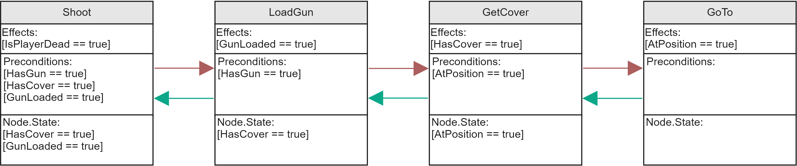

Goal-Oriented Action Planning

This project contains a multi-project-solution for a Goal-Oriented Action Planning AI (GOAP) developed with C++ 17. It was developed within the scope of a bachelor thesis. The project proposes general algorithmic changes to GOAP to improve the overall performance of the system.
Goal-Oriented Action Planning introduces actions, world states and goals, as well as a precondition-effect schema to „generate“ procedural finite state machines at runtime through the use of the A* algorithm [1].
 Example of a plan using the proposed backward planning model. Left to Right (Planning order), Right to Left (Execution order).
The algorithm starts to look for an action that would satisfy the goal (In this case the goal consists of the variable "IsPlayerDead" : True).
The example shown in the figure above assumes that the precondition ("HasGun" : True) for the shoot action is already satisfied by the world state,
showing that the system considers the world state during each step of the planning phase.
Each action has a cost, so that the algorithm is able to find the cheapest sequence of actions that would satisfy a goal.
Overview
| Plan validation | Used for replanning and general problem solving. |
| Goal and world state prioritization | In a recursive goal search the algorithm selects the highest priority goal for which a plan can be found. |
| Goal and action validation | Before planning, the system rules out goals that are not valid and actions that cannot be executed. |
| Dynamic action costs | Calculates the cost of an action whenever a plan is requested. |
| Modified backward planning model | (As shown above) Improves the overall performance of the algorithm. |
| A* search | The system uses A* to find sequences of actions that would satisfy a given goal (See figure above). |
Example simulation
The visual assets seen below are developed by third party.
To the project:
GitHub Link